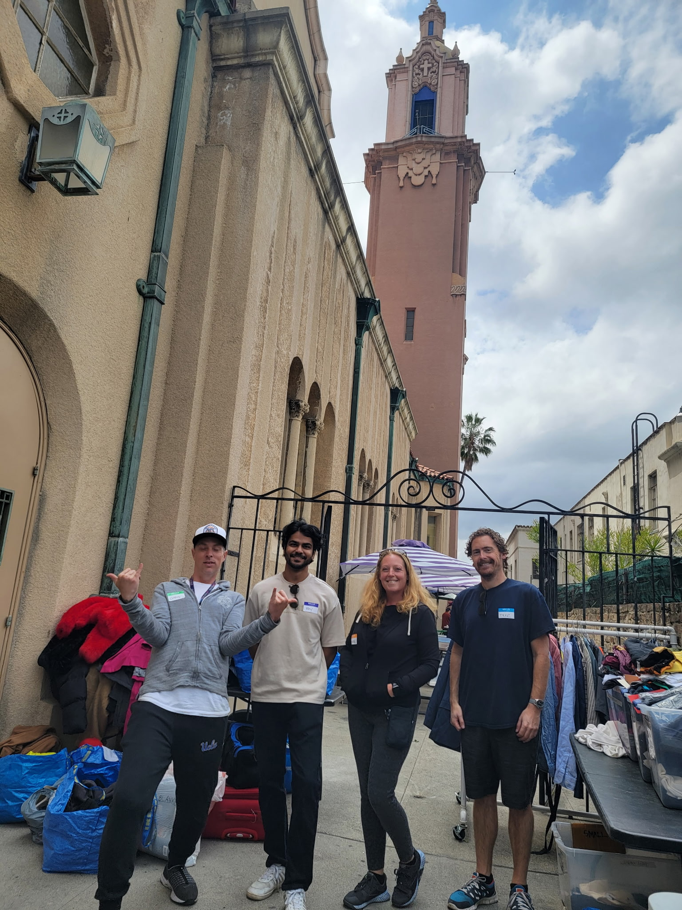
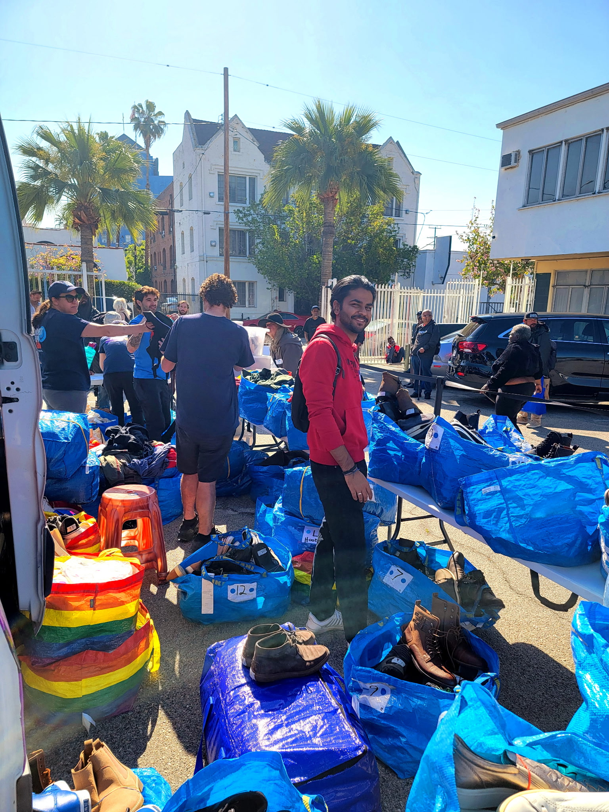

Project Ropa


Project Ropa is a Los Angeles-based nonprofit and certified social enterprise that reduces textile waste and helps restore dignity to people experiencing homelessness and extreme poverty. They run the only mobile clothing closet of its kind in the LA area, collecting and giving out clean clothing, shoes, and hygiene essentials to those in need.
I volunteered with Project Ropa to support their mission, whether at the warehouse organizing clothes and building hygiene kits or at direct service sites helping distribute items. It’s a cause that combines environmental impact with direct community care, and I’m glad to have been part of it.
To learn more or get involved, visit Project Ropa’s Get Involved page.